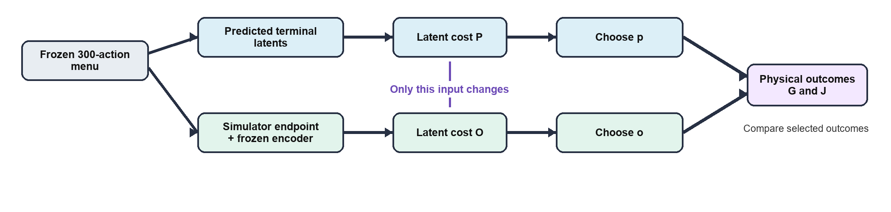
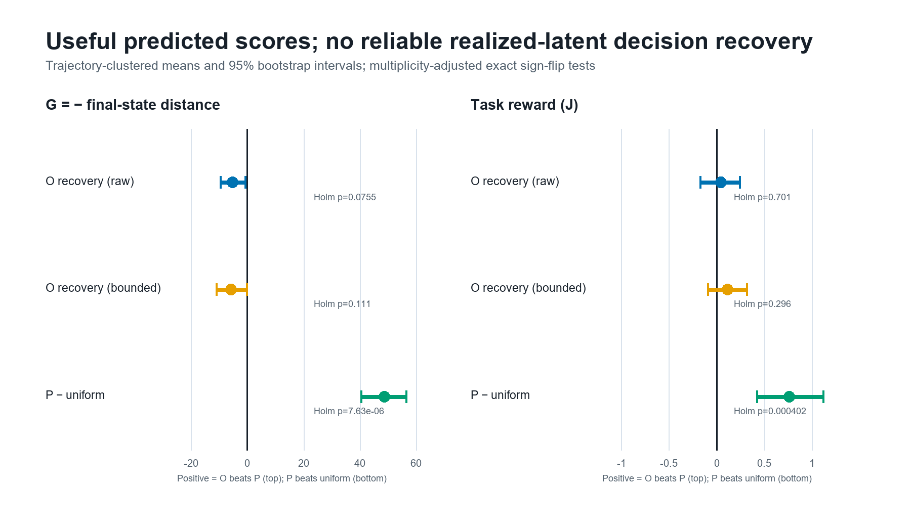
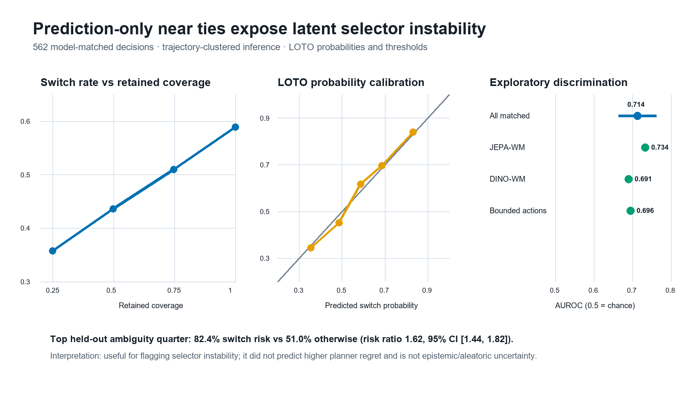

Across 20 independent trajectory clusters and two released DINOv2-based latent planners.
The intervention
Prediction quality is not decision quality.
For the same frozen 300-action Push-T menu, we compare the action chosen from predicted terminal latents (P) with the action chosen after scoring simulator-realized, re-encoded endpoints in the same latent space (O). Goal-distance utility (G) and task reward (J) judge both selected actions physically.

Main result
Useful scores, no reliable recovery.
The latent scores contained real action-selection signal: predicted scoring substantially beat uniform menu selection. But replacing predictions with realized endpoints did not pass the preregistered physical-recovery gate.
Prediction correction often changed the chosen action across all merge-valid diagnostic artifacts.
Holm-adjusted exact p = .0755 for G and p = .701 for J; neither passed the recovery gate.

Reusable analysis
Audit the score change exactly.
The included NumPy tool decomposes each candidate's latent MSE score change and audits pairwise decision margins. It can be applied to another planner whenever predicted latents, realized encoded latents, and a latent goal are available.
What the tool reports
It separates the signed goal-directed interaction from prediction-error magnitude, verifies exact reconstruction, and distinguishes preserved choices from harmful pairwise reversals.
- Candidate-level predicted and realized scores
- Exact directional and magnitude terms
- Pair margins, regret, ties, and decision taxonomy
- Focused tests for numerical and tie behavior
P − O = 2 mean((z − g)(ẑ − z)) + mean((ẑ − z)²)
from latent_score_decomposition import (
decompose_latent_scores,
pair_margin_audit,
)
audit = decompose_latent_scores(
predicted_visual=predicted,
realized_visual=realized,
goal_visual=goal,
)
pair = pair_margin_audit(
audit["predicted_score"],
audit["observed_score"],
)